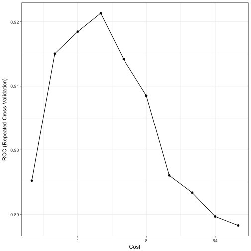
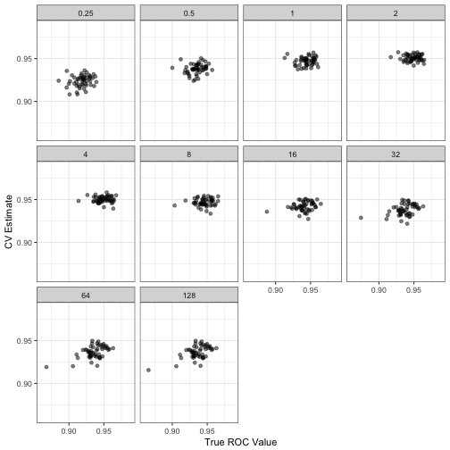
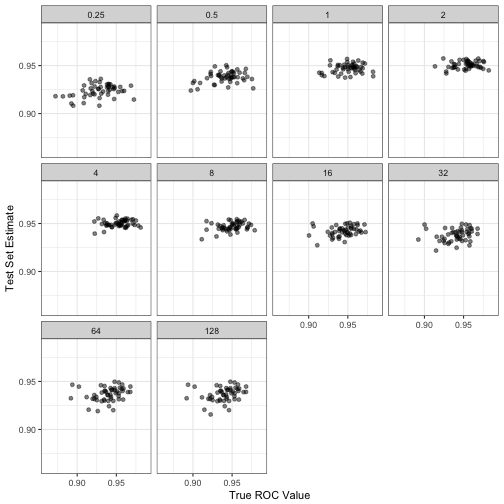
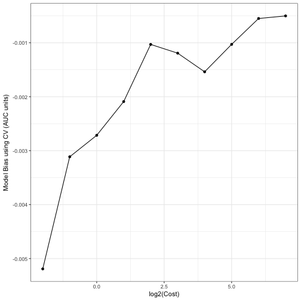
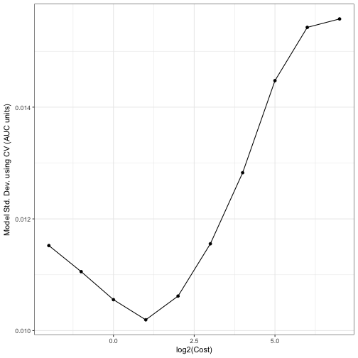
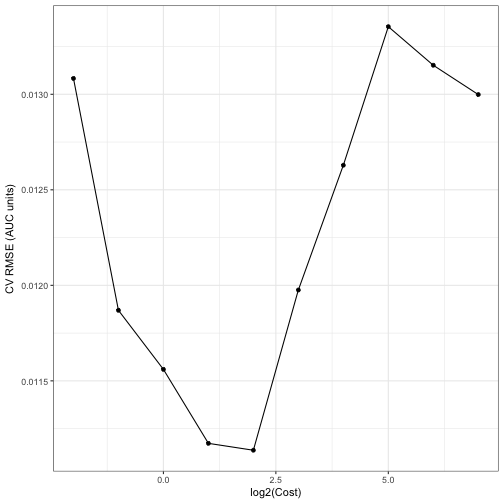

Do Resampling Estimates Have Low Correlation to the Truth? The Answer May Shock You.
One criticism that is often leveled against using resampling methods (such as cross-validation) to measure model performance is that there is no correlation between the CV results and the true error rate.
Let’s look at this with some simulated data. While this assertion is often correct, there are a few reasons why you shouldn’t care.
The Setup
First, I simulated some 2-class data using this simulation system. There are 15 predictors in the data set. Many nonlinear classification models can achieve an area under the ROC curve in the low 0.90’s on these data. The training set contained 500 samples and a 125 sample test set was also simulated.
I used a radial basis function support vector machine to model the data with a single estimate of the kernel parameter sigma and 10 values of the SVM cost parameter (on the log2 scale). The code for this set of simulations can be found here so that you can reproduce the results.
Models were fit for each of the 10 submodels and five repeats of 10-fold cross-validation were used to measure the areas under the ROC curve. The test set results were also calculated as well as a large sample test set that approximates the truth (and is labeled as such below). All the results were calculated for all of the 10 SVM submodels (over cost). This simulation was conducted 50 times. Here is one example of how the cost parameter relates to the area under the ROC curve:

The Bad News
When you look at the results, there is little to no correlation between the resampling ROC estimates and the true area under that curve:

The correlations were highest (0.54) when the cost values were low (which is also where the model performed poorly). Under the best cost value, the correlation was even worse (0.01).
However, note that the 125 sample test set estimates do not appear to have a high fidelity to the true values either:

The Good News
We really shouldn’t care about this, or at least we are measuring the effectiveness in the wrong way. High correlation would be nice but could result in a strong relationship that does not reflect accuracy of the resampling procedure. This is basically the same argument that we make against using R2.
Let’s look at the root mean squared error (RMSE) instead. The RMSE can be decomposed into two quantities:
- the bias reflects how far the resampling estimate is from the true value (which we can measure in our simulations).
- the variance of the resampling estimate
RMSE is mostly the squared bias plus the variance.
Two things can be seem in the bias graph below. First, the bias is getting better as cost increases. This shouldn’t be a surprise since increasing the cost value coerces the SVM model to be more adaptive to the (training) data. Second, the bias scale is exceedingly small (since the area under the ROC curve is typically between 0.50 and 1.00). This is true even at its worst.

The standard deviation curve below shows that the model noise is minimized when performance is best and resembles an inverted version of the curve shown in the Bad News section. This is because the SVM model is pushing against the best performance. As Tolstoy said, “all good models resemble one another, each crappy model is crappy in its own way.” (actually, he did not say this). However, note the scale again. These are not large numbers.

Looking at the RMSE of the model, which is the in the same units as the AUC values, the curve movies around a lot but the magnitude of the values are very low. This can obviously be affected by the size of the training set, but 500 samples is not massive for this particular simulation system.

So the results here indicate that:
- yes the correlation is low but
- the overall RMSE is very good.
Accuracy is arguably a much better quality to have relative to correlation.
(This article was originally posted at http://appliedpredictivemodeling.com)